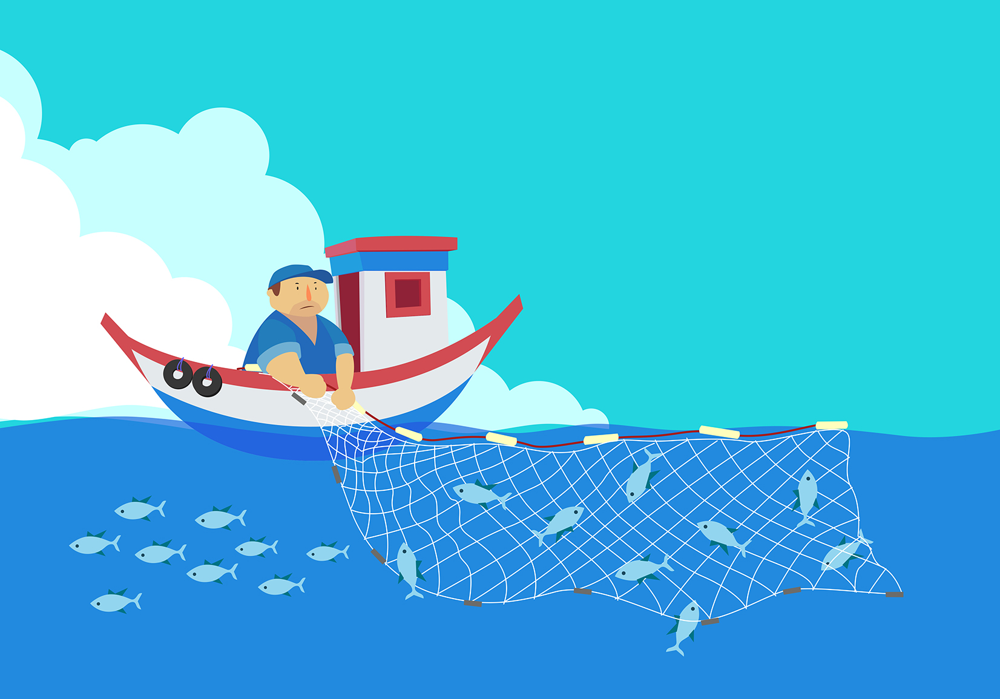

The Parable of the Net
Source: Matthew 13:47–50
"When it was full, the fishermen pulled it up on the shore. Then they sat down and collected the good fish in baskets, but threw the bad away"
(Matthew 13:48).
This parable is similar to the Parable of the Weeds. It has to do with the coming judgment at the end of the age. As the gospel is spread throughout the world, it attracts all sorts of people—some who are willing to take it seriously and others who are merely drawn to elements of the message. A time is coming when the real disciples will be separated from the false ones in the same way that fishermen would separate edible fish from inedible or unclean ones.
Jesus explained that God will *judge everyone in the future. He will separate the *righteous people from the wicked people. Jesus said many things about this event. So it is extremely important to accept the *gospel offer while it is still available.